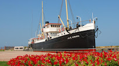
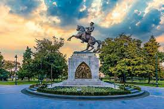
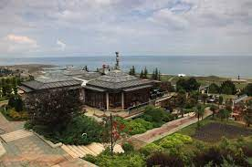

AnaSayfa
Yemekler
Gezinti

- Türkiye Cumhuriyeti’nin kuruluşunda önemli bir rolü olan Bandırma Gemisi, 1878 yılında
Glasgov'da "Trocadero" ismiyle inşa edilmiş ve sorasında Kymi adıyla uzun yıllar yük taşımıştır.
12 Aralık 1891 yılında batan gemi çıkarılarak onarılmış ve aynı yıl içinde yeniden yüzdürülmüştür.
1894 yılında o zamanki Deniz Yolları İşletmesi anlamına gelen İdare-i Mahsusa'ya nakledilen gemi
bu tarihten itibaren "Panderma" adıyla Osmanlı denizlerinde yük ve yolcu taşımaya başlamıştır.
28 Ekim 1910 tarihinde İdare-i Mahsusa adı "Osmanlı Seyrüsefain İdaresi" (Osmanlı Denizcilik İşletmesi)
olunca geminin adı "Bandırma" olarak değiştirilmiş ve posta vapuru haline getirilmiştir.
19 Mayıs 1919'da Gazi Mustafa Kemal Atatürk ve silah arkadaşlarını Samsun'a getirdikten sonra
yine posta hizmetlerine devam etmiş ve 1924 yılında "Türkiye Seyrüsefain İdaresi" tarafından hizmet
dışı bırakılmıştır. 1925 yılında İlhami Söke'ye satılan gemi aynı şahıs tarafından 4 ay içinde Haliç'te sökülmüştür.
Geminin orijinal çizimleri referans alınarak yeniden yapılmış ve 07 Şubat 2005 tarihinde Bandırma Vapuru'nun kullanım
hakkı ve işletmesini devralan Samsun Büyükşehir Belediyesi tarafından müze haline dönüştürülerek 19 Mayıs 2006 tarihinde ziyarete açılmıştır.

-
Onur Anıtı (Samsun Atatürk Anıtı), Samsun'un İlkadım ilçesindeki Atatürk Parkı'nda yer alan ve şehrin simgesi hâline gelen anıttır.
Mustafa Kemal'in Samsun'a çıktığı noktaya dikilen anıt Kurtuluş Savaşı'nın başlangıcı sayılan bu anı simgelemektedir. Cumhuriyet tarihinin ilk anıtlarındandır.
Anıtın heykeli Samsun Valisi Kâzım Paşa tarafından Samsun halkı adına Avusturyalı heykeltıraş Heinrich Krippel'e 1927 yılında sipariş edilmiş, aynı yıl 19 Mayıs
günü kaidenin resmî temel atma töreni yapılmıştır. 1928 yılında Viyana'da başlayan heykelin yapım süreci 1931 yılında sonlanmış ve heykel kaidesine 29 Ekim 1931
tarihinde dikilmiştir. 15 Ocak 1932 tarihinde anıtın resmî açılışı yapılarak cumhuriyet tarihinin on üçüncü anıtı, Heinrich Krippel'in ise Türkiye'deki dördüncü anıt çalışması olmuştur.

-
Amisos'un kuruluşu ve gelişmesi tarihi kaynaklara ve arkeolojik verilere göre başlıca dört aşamada gerçekleşmiştir.
- 1.Dönem (MÖ 6'ncı yüzyılın başı): Sinop'ta bir koloni oluşturan Miletoslular'ın küçük bir yerleşim olan Amisos'a
egemen olup Karadeniz ile Anadolu'nun içlerini bağlayan ticaret yolunun başlangıcı olarak kullanılması.
- 2.Dönem (MÖ 6'ncı yüzyılın ilk yarısı): Kapadokyalılar'ın Amisos'a yerleşmesi.
- 3.Dönem (MÖ 6'ncı yüzyıl ortası): Kapadokyalı liderin Foçalılar'a yerleşme izni vermesi ve kentin büyüyüp gelişmesi.
- 4. Dönem (MÖ 437): Sinop’tan gelen Atinalılar'ın Amisos'a yerleşmesi ve kentin adının Peiraieos olarak değiştirilmesi.
Miletoslular, Toraman Tepe sırtlarında kent surlarını yapmış, caddeler, sokaklar, meydanlar oluşturmuş, dini yapılar ve evler kurmuşlardır.
Tepenin doğusunda liman vardır. Buluntular, limanın gerisinde bir Aşağı Kent kurulduğunu göstermektedir. Buluntulara göre Toraman Tepe'nin sırtında
kurulan Yukarı Kent'in 44 hektarlık bir alanı kapsadığı söylenebilir. Kentin doğu, batı ve güneyindeki yamaçlar mezarlık olarak kullanılmıştır.
Yukarı Kent yönetici, asker, tüccar, din adamları, toprak sahipleri gibi varlıklı sınıfların yaşadığı yerdir. Liman yakınındaki Aşağı Kent’te
ticari depolar ve limanda çalışan denizciler, köleler ve diğer çalışanlar vardır. Malları Anadolu'nun içlerine götüren arabalar ve katırların ahırları,
görevlilerin barınakları da buradadır.2004 yılında başlatılan kurtarma kazılarıyla birlikte Baruthane Tümülüsleri olarak adlandırılan iki yığma tepenin
altından mezarlar ortaya çıkarılmıştır. Baruthane Tümülüsleri'nin Mitridates sülalesinin hüküm sürdüğü Helenistik Dönem’de yapıldığı anlaşılmaktadır.
Samsun Müzesi ile İstanbul Üniversitesi’nin birlikte yürüttüğü bilimsel kazıların sonunda iki ayrı mezar ortaya çıkarılarak ziyarete açılmıştır.